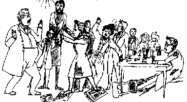

Works of Marx and Engels
—— 1842 ——
Major Works
ON FREEDOM OF THE PRESS, Marx in Rheinische Zeitung
A Christian Epic in Four Cantos, Engels

“In direct contradiction to those writers of fantasy who profess to find in the representation of private interests ideal romanticism, immeasurable depths of feeling, and the most fruitful source of individual and specific forms of morality, such representation on the contrary abolishes all natural and spiritual distinctions by enthroning in their stead the immoral, irrational and soulless abstraction of a particular material object and a particular consciousness which is slavishly subordinated to this object.”
[Marx, On the Thefts of Wood]Minor Works
Comments on the Latest Prussian Censorship Instruction, Marx
Alexander Jung, "Lectures on Modern German Literature", Engels
The Philosophical Manifesto of the Historical School of Law, Marx
Frederick William IV, King of Prussia, Engels
Yet Another Word on Bruno Bauer und die Akademische Lehrfreiheit by Dr. Gruppe, Marx
Renard's Letter to Oberpraesident von Schaper, Marx
North- and South-German Liberalism, Engels
On The Freedom of the Press, Marx
Diary of a Guest Student, Engels
Rhenish Festivals, Engels
The Question of Centralisation in Itself , Marx
Marginalia to Texts of Our Time, Engels
Polemic Against Leo, Engels
Participation in Debates of Baden Chamber of Deputies, Engels
The Liberalism of the Spenersche Zeitung, Engels
The End of the Criminalistische Zeitung, Engels
On the Critique of the Prussian Press Laws, Engels
The Leading Article in No. 179 of the Kölnische Zeitung, Marx
F W Andrea and the High Nobility of Germany, Engels
Berlin Miscellany, Engels
Centralisation and Freedom, Engels
Communism and Augsburg Allgemeine Zeitung, Marx
Communism and Augsburg Allgemeine Zeitung. Editorial Note, Marx
Proceedings of the Sixth Rhine Province Assembly, Marx
"Failures of the Liberal Opposition in Hanover", Marx
Communal Reform and the Kölnische Zeitung, Marx
The Divorce Bill. Editorial Note, Marx
Cabinet Order on the Daily Press, Marx
The Kölnische Zeitung vs. the Rheinische Zeitung, Marx
The Industrialists of Hanover and Protective Tariffs, Marx
The Attitude of Herwegh and Ruge to "The Free", Marx
The Polemical Tactics of the Augsburg Newspaper, Marx
The English View of the Internal Crises, Engels
The Internal Crises, Engels
The Divorce Bill, Marx
On the Commissions of the Estates in Prussia, Marx
The Position of the Political Parties, Engels
The Condition of the Working Class in England, Engels
The Corn Laws, Engels
The Ban on Leipziger Allgemeine Zeitung, Marx
Correspondence